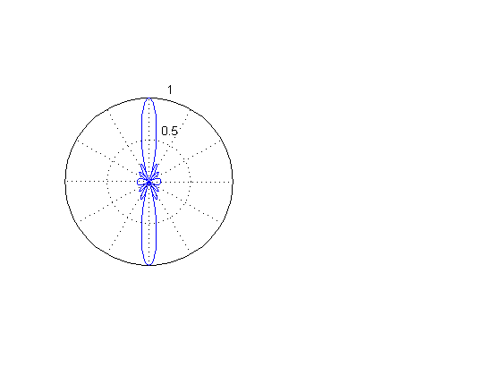
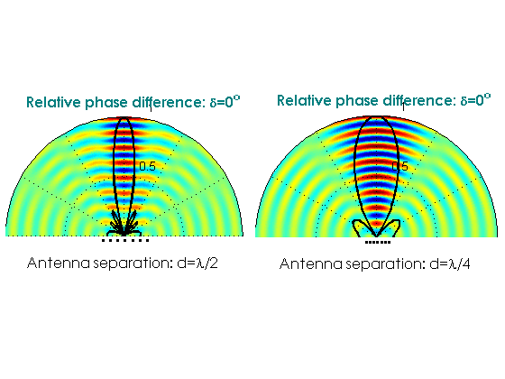

Contents
Copyright Notice
Copyright (c) 2015, Mehmet E. Yavuz All rights reserved.
Redistribution and use in source and binary forms, with or without modification, are permitted provided that the following conditions are met:
* Redistributions of source code must retain the above copyright
notice, this list of conditions and the following disclaimer.
* Redistributions in binary form must reproduce the above copyright
notice, this list of conditions and the following disclaimer in
the documentation and/or other materials provided with the distributionTHIS SOFTWARE IS PROVIDED BY THE COPYRIGHT HOLDERS AND CONTRIBUTORS "AS IS" AND ANY EXPRESS OR IMPLIED WARRANTIES, INCLUDING, BUT NOT LIMITED TO, THE IMPLIED WARRANTIES OF MERCHANTABILITY AND FITNESS FOR A PARTICULAR PURPOSE ARE DISCLAIMED. IN NO EVENT SHALL THE COPYRIGHT OWNER OR CONTRIBUTORS BE LIABLE FOR ANY DIRECT, INDIRECT, INCIDENTAL, SPECIAL, EXEMPLARY, OR CONSEQUENTIAL DAMAGES (INCLUDING, BUT NOT LIMITED TO, PROCUREMENT OF SUBSTITUTE GOODS OR SERVICES; LOSS OF USE, DATA, OR PROFITS; OR BUSINESS INTERRUPTION) HOWEVER CAUSED AND ON ANY THEORY OF LIABILITY, WHETHER IN CONTRACT, STRICT LIABILITY, OR TORT (INCLUDING NEGLIGENCE OR OTHERWISE) ARISING IN ANY WAY OUT OF THE USE OF THIS SOFTWARE, EVEN IF ADVISED OF THE POSSIBILITY OF SUCH DAMAGE.
clear all; clc; set(0,'defaultFigureColor',[1 1 1])
Simulation parameters
freq = 1e9; % Hz c = 3e8; % free space speed lambda = c/freq; T = 1/freq; omega = 2*pi*freq; k = 2*pi/lambda; Ns = 30; % Number of samples per wavelength ds = lambda/Ns; % Spatial Discretization Nt = 35; % Number of time samples per period dt = T/Nt; % Temporal discretization t = 0:dt:(1*T); % Increase the number of periods here for longer simulations R = (0*lambda):ds:(8*lambda); Ntheta = 240; % Number of angular discretization dtheta = 2*pi/Ntheta; theta = 0:dtheta:(2*pi); deltaAll=0:dtheta:2*pi;
Generate Domain
x=R.'*cos(theta); y=R.'*sin(theta);
Output properties
outFname='PhasedArray.avi'; isVideOn =0; if (isVideOn == 1) mov = avifile(outFname,'fps',8,'Compression','None'); end teal = [ 0 0.5 0.5]; % maps for unconventional coloring origBrownColor=[114/256 70/256 43/256];
Animate
itx = 1; % For naming tags % for ps=1:length(deltaAll) % Sweep through angles for ps=1:1 % Sweep through angles delta=deltaAll(ps); % for it=1:length(t) % Sweep through time for it=1:1 % Sweep through time
% --- First for d=lambda/2 -------------------- d = lambda/2; r1y=0; r1x=-3*d; r2y=0; r2x=-2*d; r3y=0; r3x=-d; r4y=0; r4x=0; r5y=0; r5x=d; r6y=0; r6x=2*d; r7y=0; r7x=3*d; for ix=1:length(R) for iy=1:length(theta) R1=sqrt( (x(ix,iy)-r1x)^2 + (y(ix,iy)-r1y)^2 ); E1(ix,iy) = cos(omega * t(it) - k*R1 + delta*-3) ; R2=sqrt( (x(ix,iy)-r2x)^2 + (y(ix,iy)-r2y)^2 ); E2(ix,iy) = cos(omega * t(it) - k*R2 + delta*-2) ; R3=sqrt( (x(ix,iy)-r3x)^2 + (y(ix,iy)-r3y)^2 ); E3(ix,iy) = cos(omega * t(it) - k*R3 + delta*-1) ; R4=sqrt( (x(ix,iy)-r4x)^2 + (y(ix,iy)-r4y)^2 ); E4(ix,iy) = cos(omega * t(it) - k*R4 + delta*0) ; R5=sqrt( (x(ix,iy)-r5x)^2 + (y(ix,iy)-r5y)^2 ); E5(ix,iy) = cos(omega * t(it) - k*R5 + delta*1) ; R6=sqrt( (x(ix,iy)-r6x)^2 + (y(ix,iy)-r6y)^2 ); E6(ix,iy) = cos(omega * t(it) - k*R6 + delta*2) ; R7=sqrt( (x(ix,iy)-r7x)^2 + (y(ix,iy)-r7y)^2 ); E7(ix,iy) = cos(omega * t(it) - k*R7 + delta*3) ; end end E=E1+E2+E3+E4+E5+E6+E7; % ----------------------------------------------------------------- % --- First for d=lambda/2 -------------------- d = lambda/4; r1y=0; r1x=-3*d; r2y=0; r2x=-2*d; r3y=0; r3x=-d; r4y=0; r4x=0; r5y=0; r5x=d; r6y=0; r6x=2*d; r7y=0; r7x=3*d; for ix=1:length(R) for iy=1:length(theta) R1=sqrt( (x(ix,iy)-r1x)^2 + (y(ix,iy)-r1y)^2 ); E1(ix,iy) = cos(omega * t(it) - k*R1 + delta*-3) ; R2=sqrt( (x(ix,iy)-r2x)^2 + (y(ix,iy)-r2y)^2 ); E2(ix,iy) = cos(omega * t(it) - k*R2 + delta*-2) ; R3=sqrt( (x(ix,iy)-r3x)^2 + (y(ix,iy)-r3y)^2 ); E3(ix,iy) = cos(omega * t(it) - k*R3 + delta*-1) ; R4=sqrt( (x(ix,iy)-r4x)^2 + (y(ix,iy)-r4y)^2 ); E4(ix,iy) = cos(omega * t(it) - k*R4 + delta*0) ; R5=sqrt( (x(ix,iy)-r5x)^2 + (y(ix,iy)-r5y)^2 ); E5(ix,iy) = cos(omega * t(it) - k*R5 + delta*1) ; R6=sqrt( (x(ix,iy)-r6x)^2 + (y(ix,iy)-r6y)^2 ); E6(ix,iy) = cos(omega * t(it) - k*R6 + delta*2) ; R7=sqrt( (x(ix,iy)-r7x)^2 + (y(ix,iy)-r7y)^2 ); E7(ix,iy) = cos(omega * t(it) - k*R7 + delta*3) ; end end E2all=E1+E2+E3+E4+E5+E6+E7; % ----------------------------------------------------------------- % f1=figure (10); clf; set(gcf,'Color',[1 1 1]); Fs=10; sp1=subplot(1,2,1); set(gca,'FontSize',Fs); d = lambda/2; A = [1 1 1 1 1 1 1]; % (Relative) Amplitude of each array antenna Fa=zeros(1,length(theta)); for i=0:(7-1) temp = (A(i+1) * exp(-1i*i*delta + 1i*k*(i*d-3*d)*cos(theta))); Fa = Fa + temp; end % Fa=abs(Fa).^2; Fa=abs(Fa); kk=polar(theta,-Fa/max(Fa)); hold on; axis off % Remove ticks set(findall(gca,'String','210'),'String',' ') set(findall(gca,'String','240'),'String',' ') set(findall(gca,'String','270'),'String',' ') set(findall(gca,'String','300'),'String',' ') set(findall(gca,'String','330'),'String',' ') set(findall(gca,'String','180'),'String',' ') set(findall(gca,'String','150'),'String',' ') set(findall(gca,'String','120'),'String',' ') set(findall(gca,'String','90'),'String',' ') set(findall(gca,'String','60'),'String',' ') set(findall(gca,'String','30'),'String',' ') set(findall(gca,'String','0'),'String',' ')
pcolor(x/max(max(x)),y/max(max(y)),E); shading interp; pbaspect([1 1 1]); %axis off; ylim([0 1]) kk=polar(theta,-Fa/max(Fa),'k'); set(kk,'LineWidth',2); hold on; set(sp1,'Position',[0.0100000 0.1100 0.47 0.850]) xlabel(['Antenna separation: d=\lambda/2'],'FontSize',Fs+2,'FontName','Century Gothic') text(-0.85,1.15,['{\bf Relative phase difference: \delta=' num2str(floor(delta/pi*180)) '^o}'],'FontSize',Fs+2,'Color',teal,'FontName','Century Gothic') % Array locations (For visualization) yoffset=0.04; xloc=-0.02; yloc=0.067; %(For smaller one) text(xloc,yloc-yoffset,1,'.','FontSize',Fs+12) text(d/max(max(x))+xloc,yloc-yoffset,1,'.','FontSize',Fs+12) text(2*d/max(max(x))+xloc,yloc-yoffset,1,'.','FontSize',Fs+12) text(3*d/max(max(x))+xloc,yloc-yoffset,1,'.','FontSize',Fs+12) text(-d/max(max(x))+xloc,yloc-yoffset,1,'.','FontSize',Fs+12) text(-2*d/max(max(x))+xloc,yloc-yoffset,1,'.','FontSize',Fs+12) text(-3*d/max(max(x))+xloc,yloc-yoffset,1,'.','FontSize',Fs+12) sp2=subplot(1,2,2);set(gca,'FontSize',Fs); d = lambda/4; A = [1 1 1 1 1 1 1]; % Amplitude of each array antenna Fa=zeros(1,length(theta)); for i=0:(7-1) temp = (A(i+1) * exp(-1i*i*delta + 1i*k*(i*d-3*d)*cos(theta))); Fa = Fa + temp; end % Fa=abs(Fa).^2; Fa=abs(Fa); kk=polar(theta,-Fa/max(Fa)); hold on; pcolor(x/max(max(x)),y/max(max(y)),E2all); shading interp; pbaspect([1 1 1]); axis off; ylim([0 1]) kk=polar(theta,-Fa/max(Fa),'k'); set(kk,'LineWidth',2); hold on; set(sp2,'Position',[0.50500 0.1100 0.48 0.850]) xlabel('Antenna separation: d=\lambda/4','FontSize',Fs+2,'FontName','Century Gothic') text(-0.85,1.15,['{\bf Relative phase difference: \delta=' num2str(floor(delta/pi*180)) '^o}'],'FontSize',Fs+2,'Color',teal,'FontName','Century Gothic') % Array locations (For Full Screen) xloc=-0.02; yloc=0.067; %(For smaller one) text(xloc,yloc-yoffset,1,'.','FontSize',Fs+12) text(d/max(max(x))+xloc,yloc-yoffset,1,'.','FontSize',Fs+12) text(2*d/max(max(x))+xloc,yloc-yoffset,1,'.','FontSize',Fs+12) text(3*d/max(max(x))+xloc,yloc-yoffset,1,'.','FontSize',Fs+12) text(-d/max(max(x))+xloc,yloc-yoffset,1,'.','FontSize',Fs+12) text(-2*d/max(max(x))+xloc,yloc-yoffset,1,'.','FontSize',Fs+12) text(-3*d/max(max(x))+xloc,yloc-yoffset,1,'.','FontSize',Fs+12) set(findall(gca,'String','210'),'String',' ') set(findall(gca,'String','240'),'String',' ') set(findall(gca,'String','270'),'String',' ') set(findall(gca,'String','300'),'String',' ') set(findall(gca,'String','330'),'String',' ') set(findall(gca,'String','180'),'String',' ') set(findall(gca,'String','150'),'String',' ') set(findall(gca,'String','120'),'String',' ') set(findall(gca,'String','90'),'String',' ') set(findall(gca,'String','60'),'String',' ') set(findall(gca,'String','30'),'String',' ') set(findall(gca,'String','0'),'String',' ') set(gcf,'Renderer','Zbuffer') % - Generate video ---------------- if (isVideOn == 1) F = getframe(gcf); mov = addframe(mov,F); end % ---------------------------------- % Dump to JPEG if (isVideOn == 1) set(gcf,'PaperPositionMode','auto'); iBufferTime=0; FolderName='JPEG'; mkdir(FolderName) Name=[FolderName '/Animation_']; disp(['itx= ' num2str(itx)]); if (itx <10) print (f1, '-djpeg100', [Name '000' num2str(itx) '.jpg'],'-r150') elseif (itx>=10 && itx <100) print (f1, '-djpeg100', [Name '00' num2str(itx) '.jpg'],'-r150') elseif (itx>=100 && itx <1000) print (f1, '-djpeg100', [Name '0' num2str(itx) '.jpg'],'-r150') else print (f1, '-djpeg100', [Name '' num2str(itx) '.jpg'],'-r150') end end itx=itx+1; pause(0.1);
end end if (isVideOn == 1) mov = close(mov); end